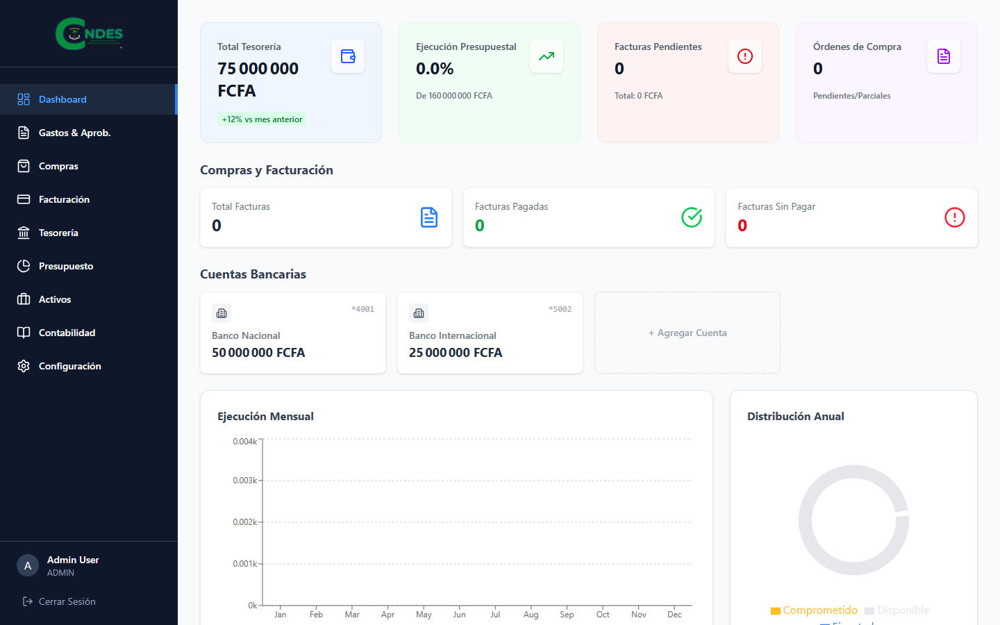
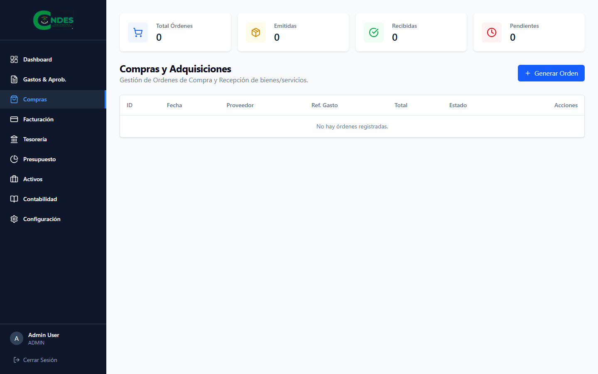
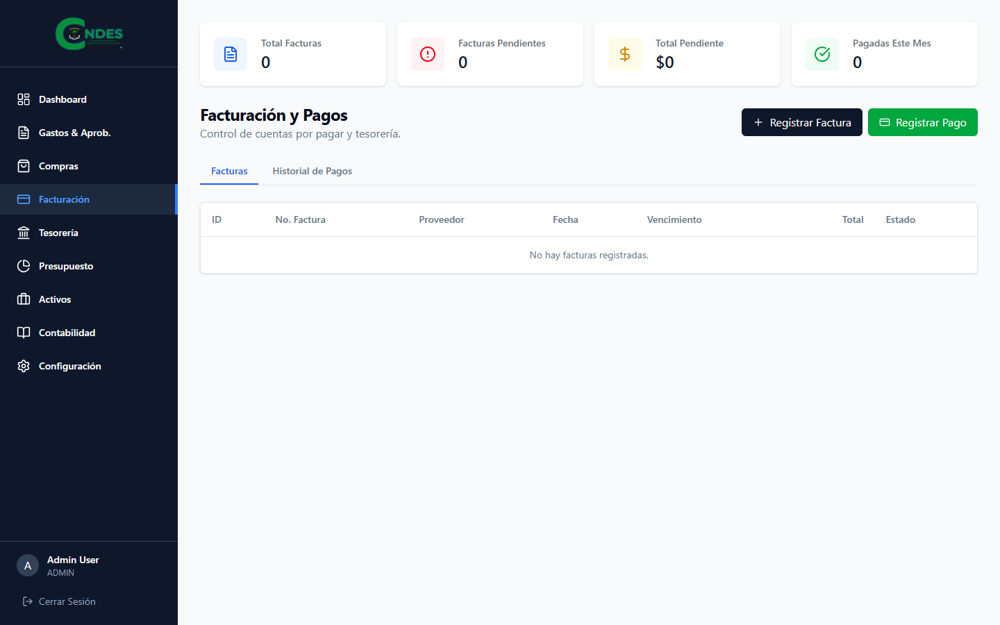
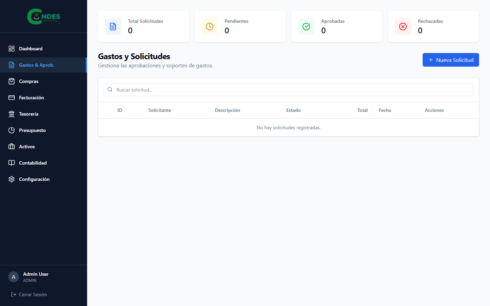
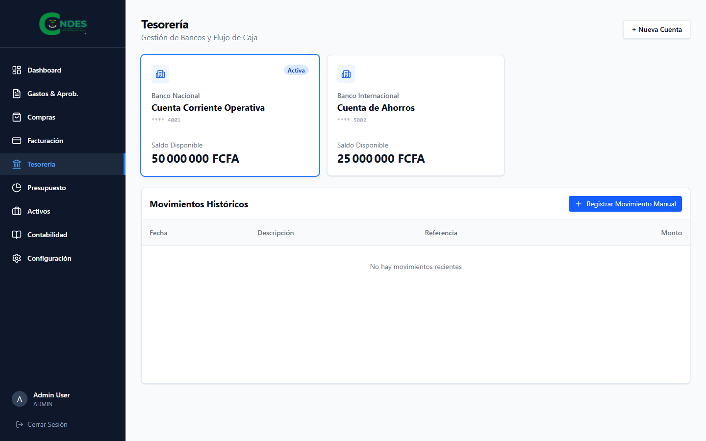
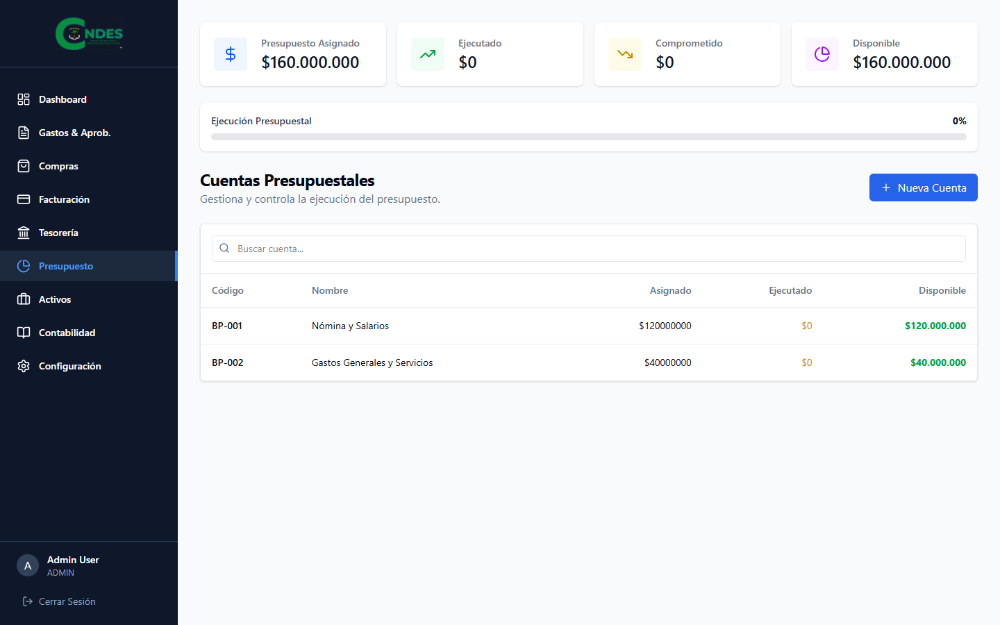
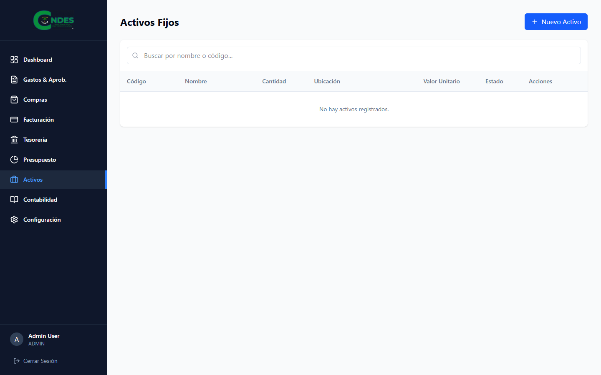
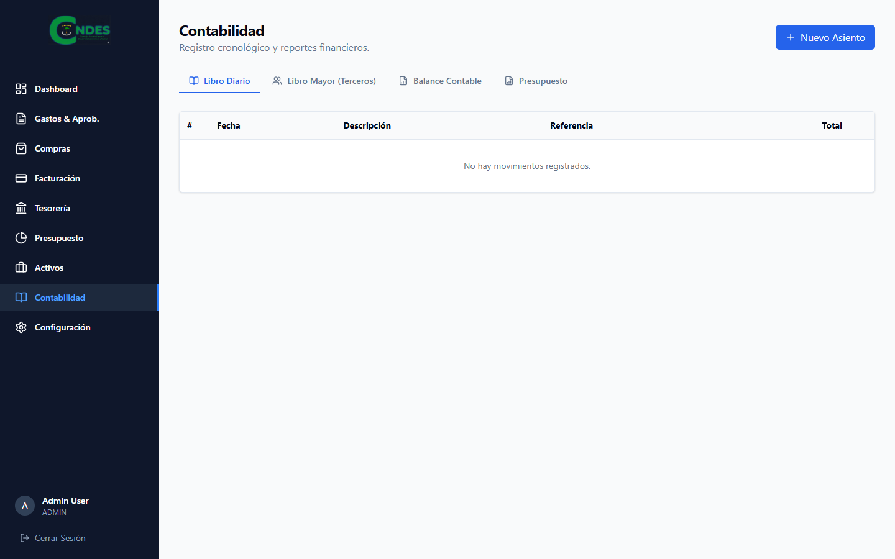
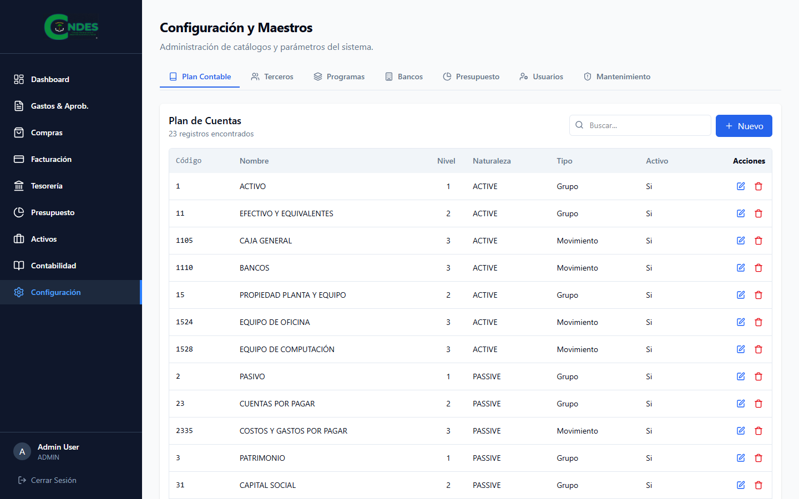

SGCFinaciera
Sistema de Gestión Contable y Financiera
Manual de Usuario v1.0
Contenido
1. Acceso al Sistema
Para ingresar al sistema, diríjase a la página de inicio de sesión.

Ingrese sus credenciales:
- Email: Su correo corporativo (ej. admin@example.com)
- Contraseña: Su clave de acceso segura.
2. Panel de Control (Dashboard)
El centro de operaciones financieras. Ofrece una visión panorámica del estado actual.

Componentes principales:
- KPIs: Tesorería total, ejecución presupuestal, facturas pendientes.
- Gráficos: Ejecución mensual de gastos y distribución del presupuesto.
- Actividad Reciente: Últimos movimientos y aprobaciones.
3. Compras (Procurement)
Gestión integral del ciclo de compras.

Permite visualizar, crear y gestionar órdenes de compra, proveedores y recepciones.
4. Facturación (Billing)
Control de cuentas por pagar y facturas recibidas.

5. Gastos (Expenses)
Control de gastos operativos y reembolsos.

6. Tesorería (Treasury)
Gestión de las cuentas bancarias y flujo de caja.

7. Presupuesto (Budget)
Planificación y seguimiento del presupuesto anual.

8. Activos Fijos (Assets)
Inventario y control de activos fijos.

9. Contabilidad (Accounting)
Registros contables y plan de cuentas.

10. Configuración (Settings)
Ajustes generales del sistema y usuarios.
